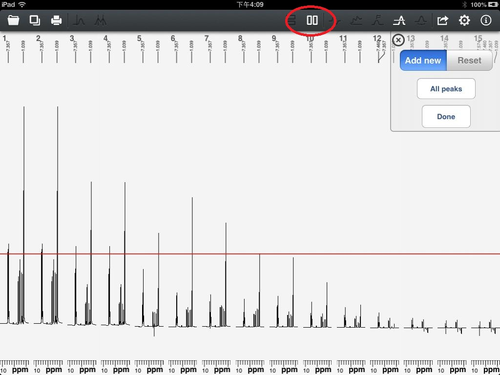
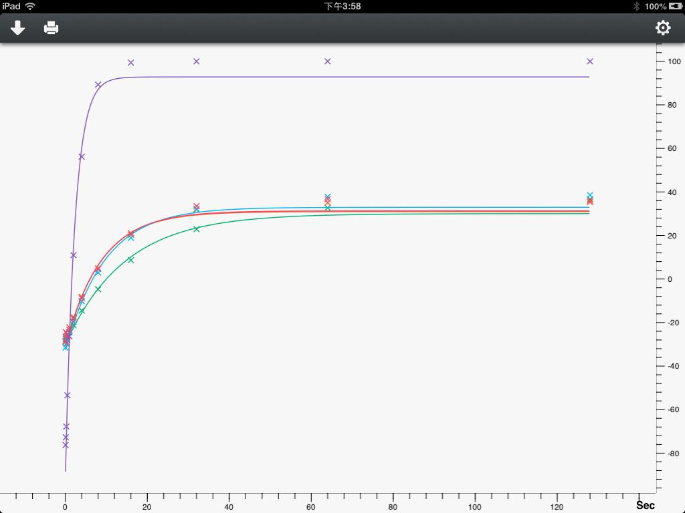
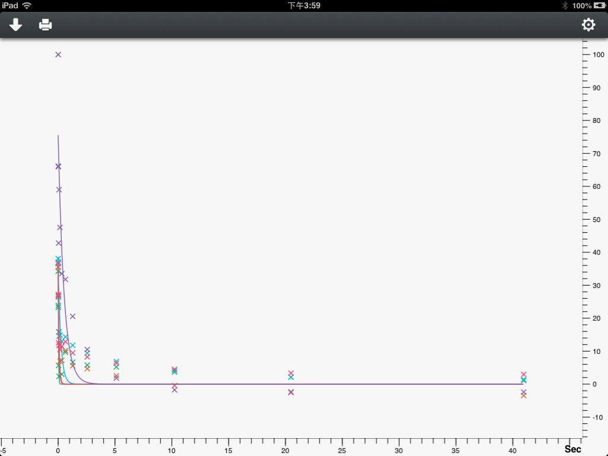
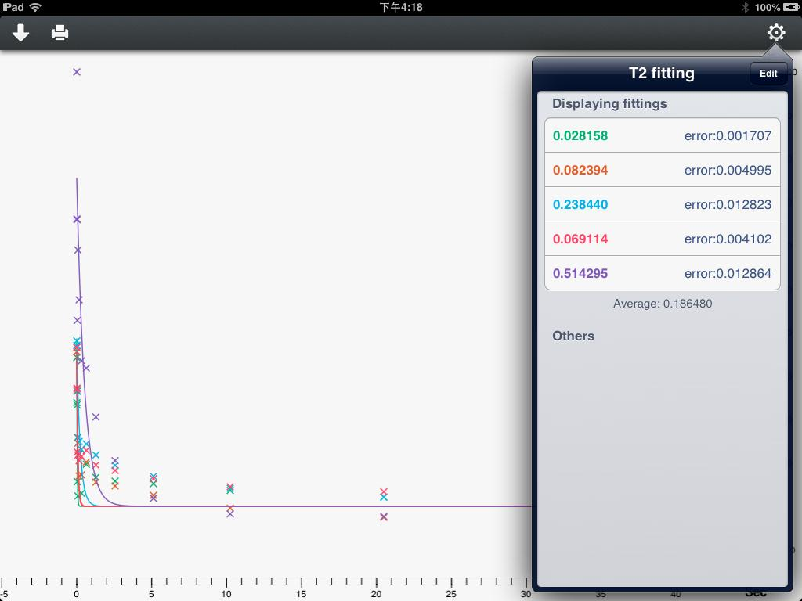
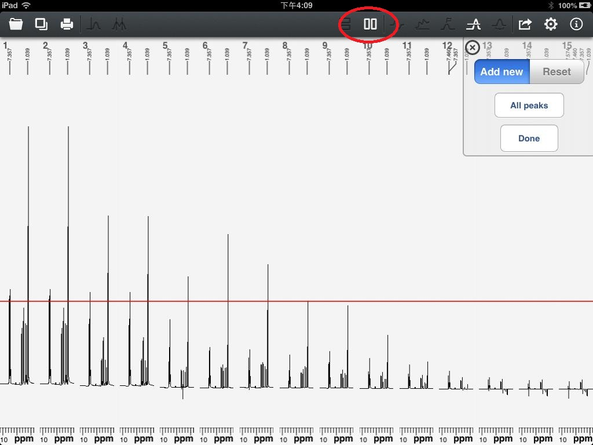
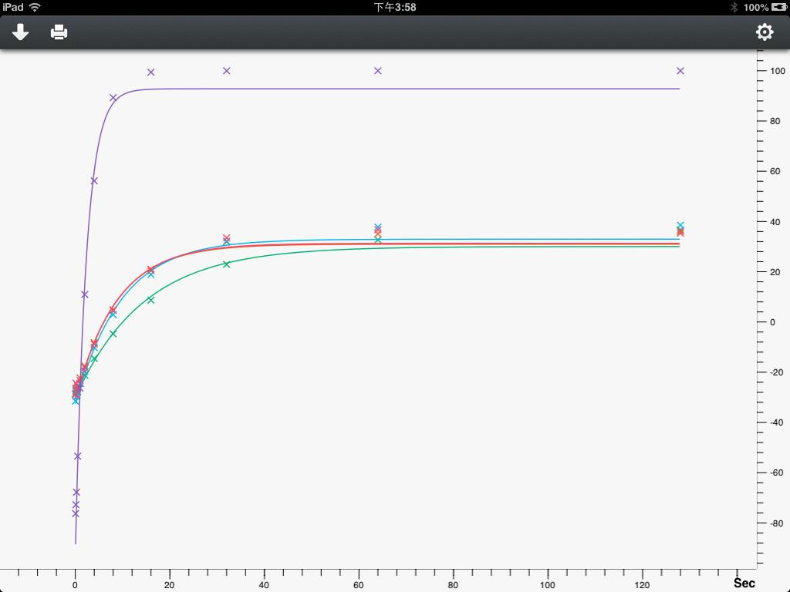
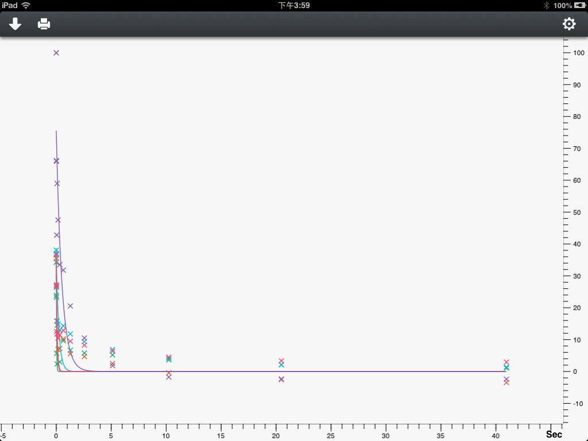
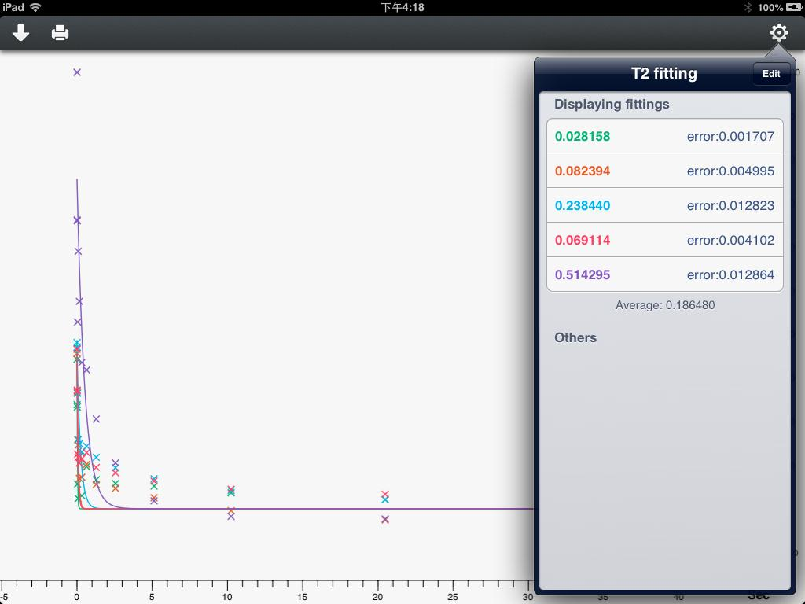

User Guide of Touch NMR
If current data is arrayed spectrums, there will be a layout control on main toolbar. As shown in figure 20. Users can lay out the spectrums in vertical and horizontal. Finding peaks for arrayed spectrums is a little different with 1D spectrum. If the layout for arrayed spectrums is horizontal. The horizon cursor for peaking peaks is only useful for the first spectrum. As shown in figure 20.

Figure 20
After finding some peaks out, users can make fitting operations for arrayed spectrums. Like T1 fitting, as shown in figure 21.

Figure 21
T2 fitting, as shown in figure 22.

Figure 22
Click the "Print" icon, the print operation will be called out. Users can also configurate the fittings by clicking the "Setting" icon. As shown in figure 23.

Figure 23
The configuration job is the same as print operation.

Figure 20
After finding some peaks out, users can make fitting operations for arrayed spectrums. Like T1 fitting, as shown in figure 21.

Figure 21
T2 fitting, as shown in figure 22.

Figure 22
Click the "Print" icon, the print operation will be called out. Users can also configurate the fittings by clicking the "Setting" icon. As shown in figure 23.

Figure 23
The configuration job is the same as print operation.